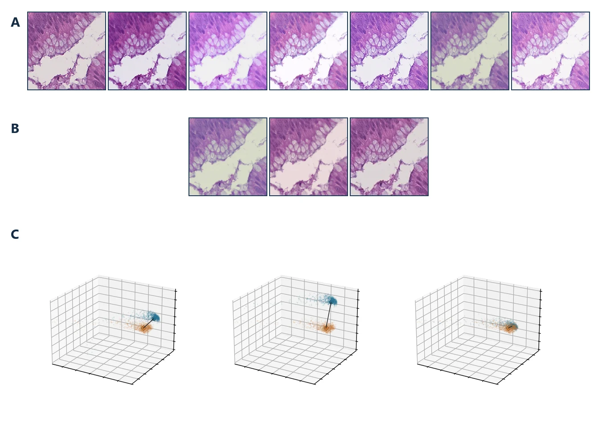

Scanner Variability & Harmonization
How slide scanners affect digital pathology images, model features, and segmentation.
The same tissue can look different when digitized on different scanners. For my master’s research at Johns Hopkins University, I developed a workflow to register whole-slide images across scanners so corresponding tissue regions could be compared.
From registration to harmonization
I studied scanner effects on color, foundation-model embeddings, and segmentation. I investigated image harmonization before feature extraction and feature harmonization directly in embedding space.
